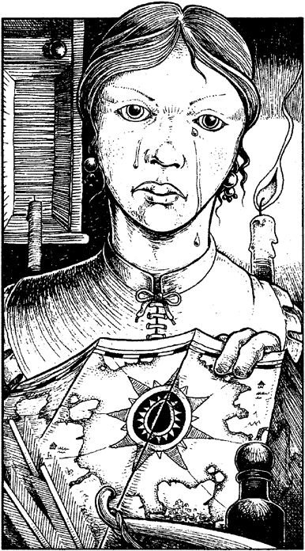

147
You are welcomed by an attractive young woman with long, jet-black hair, woven into a single plait that reaches almost to her waist. She is dressed in a green suede-cloth tunic, similar to your own, and wears soft, calf-skin gloves. In addition to the maps, which she researches and draws herself, she also sells all manner of hunting and scouting equipment. She takes an obvious delight in her work and shows you samples of her maps, which are excellent for their accuracy and attention to detail. You ask her if she has ever prepared a map of the Danarg and she turns strangely silent. Tears begin to fill her dark eyes as she recalls how she and her father once explored beyond the fringes of that fearsome domain. They had planned to map its internal waterways and, if luck was with them, discover the lost temple of the Elder Magi. With sadness she tells of her father’s death in the jaws of a monster that had stalked them from the moment they had entered the jungle-swamp. She escaped but not unscathed. As she fought to free her father from the mouth of the beast she was badly burned by its caustic saliva. Carefully she removes one of her calf-skin gloves and reveals an injured hand. The sight of the angry red scar tissue fills you with compassion for this brave young woman.

If you wish to question her further about the Danarg, turn to 44.
If you wish to bid her good evening and leave the shop, turn to 204.